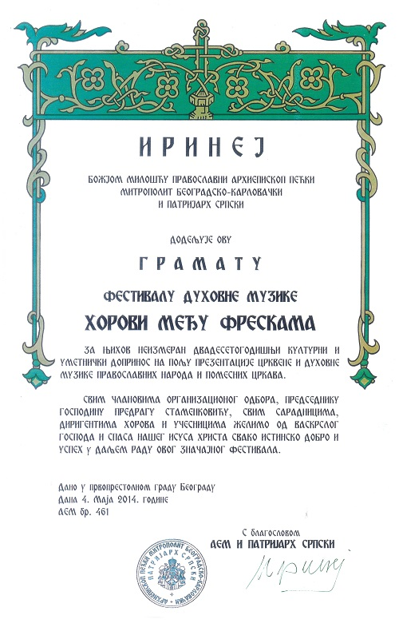

ФЕСТИВАЛ ДУХОВНЕ МУЗИКЕ
ХОРОВИ МЕЂУ ФРЕСКАМА
О фестивалу
Фестивал је основан 1995. са циљем обнове, очувања и обогаћења српске православне духовне музике и упознавање духовне музике свих осталих конфесија из светске културне баштине.
Током 20 година Фестивала изведено је, у целини или фрагментарно, више од 100 литургија, опела, миса, реквијема и преко 1000 краћих композиција домаћих и страних аутора духовне музике.
На концертима је наступило око 10.000 извођача, а концерте је у Галерији фресака, Галерији Прогрес, Атријуму Народног музеја, Концертној дворани Задужбине Илија Милосављевић Коларац, Галерији Музеја историје Југославије, Великој дворани Сава Центра, концертној дворани СМШ Мокрањац, Храму Свети Сава и крипти храма Свети Марко, пратило преко 45.000 посетилаца.
Захваљујући продукцијама Радио Телевизије Београд - Србије, Телевизије Политика и АРТ Телевизије, о догађањима на Фестивалу, директним преносима, емитовањем снимљених концерата и фестивалским хроникама, редовно је информисан и знатно шири аудиторијум.
- Музичка продукција Радио Београда снимила је 85 сати;
- Продујкција Фестивала преко 200 сати;
- Продукција БК ТВ 2 сата;
- Продукција ТВ Београд 30 сати;
- Продукција ТВ Политика 8 сати;
- Продукција Богословског факултета 5 сати.
Снимци се чувају у архову Фестивала и фонотекама и видеотекама наведених продукција.
Од оснивања Фестивала реализовано је око 300 концерата, на којима је су наступили најпознатији београдски, српски, југословенски диригенти, солисти, дечји хорови, вокални ансамбли и хорови. Наступили су, такође, вокални ансамбли и хорови из иностранства:
- Из Републике Српске и Федерације БИХ - певачке дружине Јединство и Свети Платон Бањалучки - Бања Лука,
- Србадија - Бијељина,
- Камерни хор Музичке академије Српско Сарајево,
- Pontanima - Сарајево;
- Из Хрватске - вуковарско српско певачко друштво Јавор;
- Из Русије - Градски академски хор Новочеркаска, Мушки камерни хор московске Патријаршије, Академски хор Росика - Санкт Петербург;
- Из Бугарске - Камерни хор Јован Кукузел и хорска капела Светослав Обретенов;
- Из Румуније - хор Сурсум Корда;
- Из Шведске - хор Schoenstaviks;
- Из Украјине - кијевски октет Lege Artis;
- Из Венецуеле - хор грегоријанске школе San Tarcisio - Маракаибо;
- Из Италије - хор Ђузепе Верди, Терамо.
1995-2005
У прве три године Фестивал је обухватао редовне концерте недељом и ванредне концерте средом, током јуна, јула, августа и септембра. Од 1998. Фестивал обухвата централни програм - редовни концерти уторком, четвртком, суботом и недељом - током јуна и јула, и пратећи програм - повремени концерти током целе фестивалске године (од августа текуће до маја наредне године). Фестивал је у протеклих 20 година обновио и, највећим делом, снимио:
- 1995. опус Стевана Стојановића Мокрањца,
- 1996. опус Корнелија Станковића,
- 1997. опус Јосифа Маринковића.
- 1988. и 1999. (Фестивал посвећен обележавању 800 гoдина манастира Хиландар) изведен велики број композиција насталих по хиландарским записима и најстаријих средњевековних српских аутора духовне музике; уз то, трећина изведених програма била су премијерна извођења композиција савремених српских аутора духовне музике.
- 2000. (Фестивал посвећен обележавању 2000. годишњице Хришћанства) реализовано преко 70 % премијерно изведених композиција - капиталних дела - старих и савремених српских аутора духовне музике.
Оваква тенденција настављена је и на Фестивалима 2001, 2002, 2003. и 2004. - 2004. Први пут одржан је Округли сто (две сесије) на тему Допринос савремених фестивала духовне музке развоју црквеног појања и духовне музике уопште, на коме је учествовао импоизантан број композитора, диригената, теолога и посленика у култури, посебно музичкој. Уводно излагање на тему дала је др Даница Петровић, директор Музиколошког Института САНУ. Реализована је и изложба копија фресака, студената Академије СПЦ за уметност и консервацију (селекција проф. Горан Јанићијевић).
- 2005. фестивал је посвећен делу Војислава Илића, што је све учеснике обавезивало да у програму имају барем једно краће дело овог аутора. Фестивал у својој продукцији припрема издавање партитура духовне музике и снимљених композиција током Фестивала, на ЦД-у, овог аутора. Уз циклус концерата Фестивал је организовао изложбу радова студената Академије СПЦ за уметност и консервацију под називом Звуци са фресака (копије фресака на платну на тему Музика у фреско сликарству - селекција проф. Горан Јанићијевић) и Округли сто средом са темама: прве среде Лик и дело Војислава Илића, уводничар др Катарина Томашевић; друге, треће и четврте среде (током Фестивала) мини семинар за диригенте Конципирање концертног програма духовне музике са освртом на извођачке могућности ансамбала, драматургију концерта, стилске карактериситике одабраних напева, хронолошки редослед, литургијски редослед, ... са предавачима: Даринка Матић Маровић, др Даница Петровић и Предраг Миодраг. Диригенти који су одслушали сва три предавања и учествовали у дискусијама Округлог стола ма наведену тему, добили су Сертификат Фестивала.
2006-2016
- 2006. Фестивал је, у част годишњице Стевана Стојановића Мокрањца и проте Мирка Павловића, као обавезан програм учесницима одредио краће композиције или капитална дела ових аутора.
- 2007. Као и претходне године због финансијских проблема Фестивал није реализовао планиране пратеће манифестације : Округли сто и изложбе радова студената Академије СПЦ за уметност и консервацију и привремено је био премештен у јесењи термин (последња недеља октобра и три недеље новембра).
- 2008. Фестивал се вратио у свој устаљени термин (друга половина јуна - прва половина јула) и организовао циклус концерата у Атријуму Народног музеја у Београду. Обавезан део програма учесника чиниле су композиције савремених српских композитора (најмање једна). Реализоване су и пратеће манифестације: Округли сто на тему Карловачко појање у богослужбеној пракси СПЦ - уводно излагање Предраг Миодраг, и Радионица за диригенте, учеснике Фестивала, на тему Поставка хорске композиције са концертом поводом доделе награда лауреатима. Радионицом су руководили диригенти: Светлана Вилић, Александар Вујић, Вера Царина и Предраг Миодраг, вишегодишњи учесници и лауреати Фестивала. На Радионици су обрађене четири композиције из опуса Војислава Илића, по избору наведених диригената. Полазници су добили Сертификат Фестивала.
- 2009. Фестивал је, поводом јубиларног 15. издања организовао циклус концерата у Галерији фресака Народног музеја у Београду. Обавезан део прграма учесника чиниле су композиције савремених српских аутора духовне музике (најмање једна).
- 2010. Фестивал је био посвећен Милоју Милојевићу и у циклусу од 10 концерата реализован је у Атријуму Народног музеја у Београду.
- 2011. Фестивал је био посвећен Александру Гаванском и реализован је у циклусу од 7 концерата у Галерији фресака Народног музеја у Београду.
- 2012. Фестивал је био посвћен Тихомиру Остојићу и реализован је у циклусу од 7 концерата у Галерији фресака Народног музеја у Београду. Током Фестивала релизована је и једна сесија Округлог стола - Промоција књиге „Огледи о српској црквеној музици” Предрага Миодрага, у сали за конференције Народног музеја у Београду.
- 2013. у четвртак 10. јануара, у Саборном храму Свети Архангел Михаило, први пут од када је постао такмичарски, организовао свечани концерт лауреата 18. Фестивала духовне музике Хорови међу фрескама. На концерту су наступили по један дечји хор и вокални ансамбл из Београда и три камерна хора - из Бачке Паланке, Јагодине и Београда. Фестивал је био посвећен обележавању 1700 година Миланског Едикта и композитору Тихомиру Остојићу. Реализовано је 9 концерата и три сесије Округлог стола у београдским храмовима: Саборном "Свети Архангел Михаило", цркви "Свети Сава" и крипти цркве "Свети евангелиста Марко". Теме округлог стола биле су:
- „1700 година Миланског Едикта” са уводним излагачима - др Радивој Радић и др Радомир Поповић;
- „Образовање композитора, диригената и појаца за богослужбене и концертне потребе” са учесницима - др Бранка Радовић, мр Предраг Миодраг, Александар Вујић, Предраг Ђоковић и отац Вукашин Плећевић;
- „Промоција књиге и нотних зборника” - * Катарина Станковић – монографија «Диригент Војислав Илић»; * Милица Андрејевић – „Музика и речи из ризнице митрополита Дамаскина Грданичког”; *Тамар Петијевић - „Осмогласник Бранка Ченејца” и „Осмогласник - Вечерње Корнелија Станковића”; *Вера Царина - Нотни зборник „Вечерње на Велики петак по традицији Светоуспенског храма у Панчеву”. Медијатор мр Предраг Д. Стаменковић.
- 2014. у петак 10. јануара, у Саборном храму „Свети Архангел Михаило”, организовао свечани Концерт Победника 19. Фестивала духовне музике „Хорови међу фрескама”. На концерту су наступили по један Дечји хор и Вокални ансамбл из Београда, Камерни хор из Суботице и Велики хор из Ниша.
Фестивал је био посвећен обележавању 100. годишњице од смрти Стевана Стојановића Мокрањца. Реализовано је 14 концерата, две сесије Округлог стола, петанестог одишњи помен Војиславу Илићу и Свечана подела награда Победницима Фестивала у београдским храмовима: Саборном "Свети Архангел Михаило", цркви "Свети Сава" и крипти цркве "Свети евангелиста Марко".
Теме Округлог стола су биле:- Стеван стојановић Мокрањац и српска православна духовна музика - Гости излагачи: др Бранка Радовић, др Гордана Крајачић, др Предраг Ђоковић и Наташа Марјановић.
- Промоција књига ТРИЛЕ У СРПСКОМ ЦРКВЕНОМ ПОЈАЊУ Предрага Миодрага - учествовали: др Јелена Јованоић етномузиколиг, научни сарадник Музиколошког института САНУ, Александар Вујић композитор, диригент и професор Факултета музичке уметности у Београду и мр Предраг Миодраг професор Акеадемије СПЦ за уметност и консервацију у Београду и ПРЕДСТАВЉАЊЕ ОДСЕКА ЗА ЦРКВЕНО ПОЈАЊЕ – учествовали: ђакон мр Ивица Чаировић, секретар Академије СПЦ за уметност и консервацију и мр Предраг Мидраг професор исте Академије. Медијатор Округлог стола мр Предраг Д Стаменковић;
ГРАМАТА
Грамата његове светости патријарха Српског Иринеја
